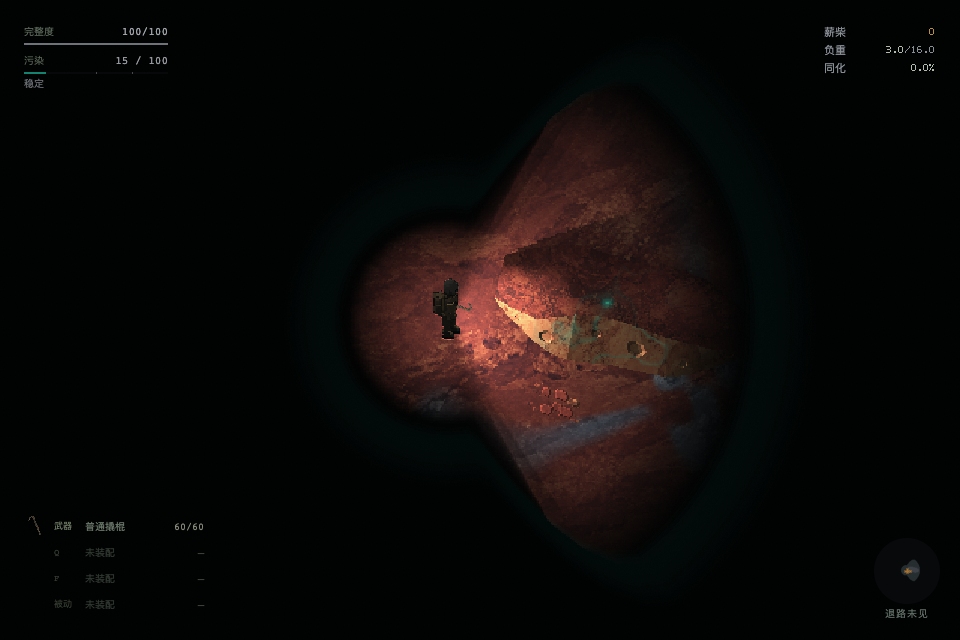
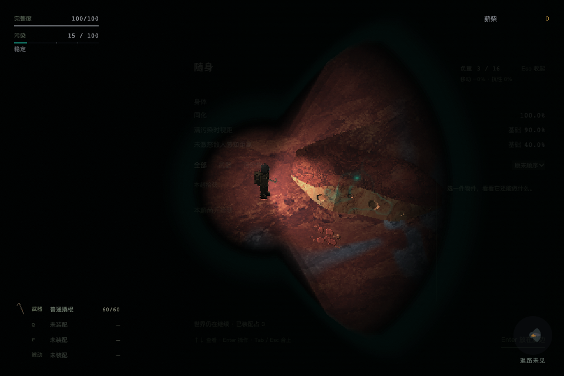

右上角 HUD · 正式接入
pass · 63bee2da8522d42c029b601936b51f78400fec04
真实新建记录经备行进入低污染 Rift，同一镜头冻结后受控设值：轻载／未同化、临满／60%、满载／100%。截图使用正式 HUD，非自然累积过程。之后恢复循环验证负重点击与 Tab。未触碰玩家存档。
执行记录与源码指纹
- 通过 — real preparation entered persistent Rift protocol at A0
- 通过 — sample 0: three labels and exact values
- 通过 — sample 0: approved numeric colors
- 通过 — sample 0: equal 18px row pitch and shared left/right edges
- 通过 — sample 0: hard pixels inside overlay without icon or mechanism copy
- 通过 — sample 1: three labels and exact values
- 通过 — sample 1: approved numeric colors
- 通过 — sample 1: equal 18px row pitch and shared left/right edges
- 通过 — sample 1: hard pixels inside overlay without icon or mechanism copy
- 通过 — sample 2: three labels and exact values
- 通过 — sample 2: approved numeric colors
- 通过 — sample 2: equal 18px row pitch and shared left/right edges
- 通过 — sample 2: hard pixels inside overlay without icon or mechanism copy
- 通过 — click burden opens live inventory
- 通过 — Tab closes inventory and restores secondary HUD
- 通过 — Tab opens inventory
- 通过 — second Tab closes without pausing
- 通过 — production sources unchanged during verification
- 通过 — no runtime page errors
scene-0.png
scene-1.pngscene-2.pnginventory-click.png